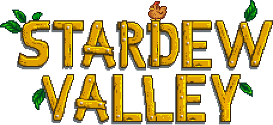
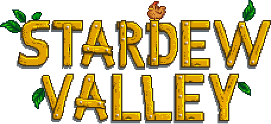
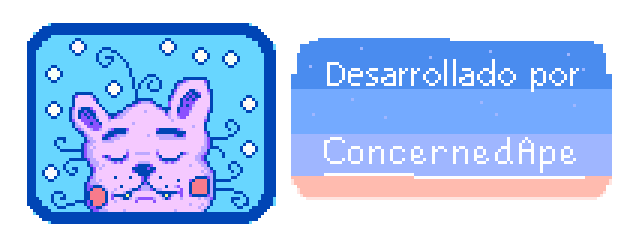
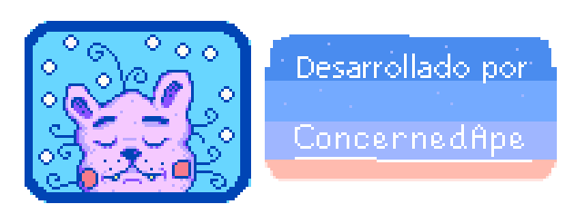

Sobre el juego
¡Stardew Valley es un RPG de vida en el campo! Hereda la vieja granja de tu abuelo en Stardew Valley. Armado con herramientas de segunda mano y algo de dinero, te dispones a empezar tu nueva vida. ¿Podrás aprender a vivir de la tierra y a convertir esos campos de malezas en un hogar próspero? No va a ser fácil. Desde que Joja Corporation llegó a la ciudad, las antiguas formas de vivir han desaparecido. El centro comunitario, en su momento el centro de actividad más activo de la ciudad, se encuentra ahora en ruinas. Pero el valle se encuentra lleno de oportunidades. ¡Con un poco de dedicación, podrás ser uno de los que devuelva Stardew Valley a la gloria!
 
